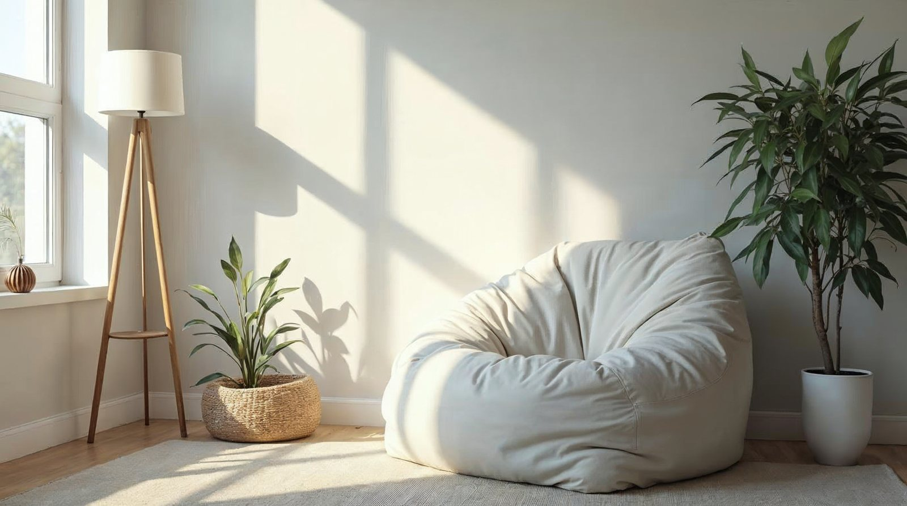
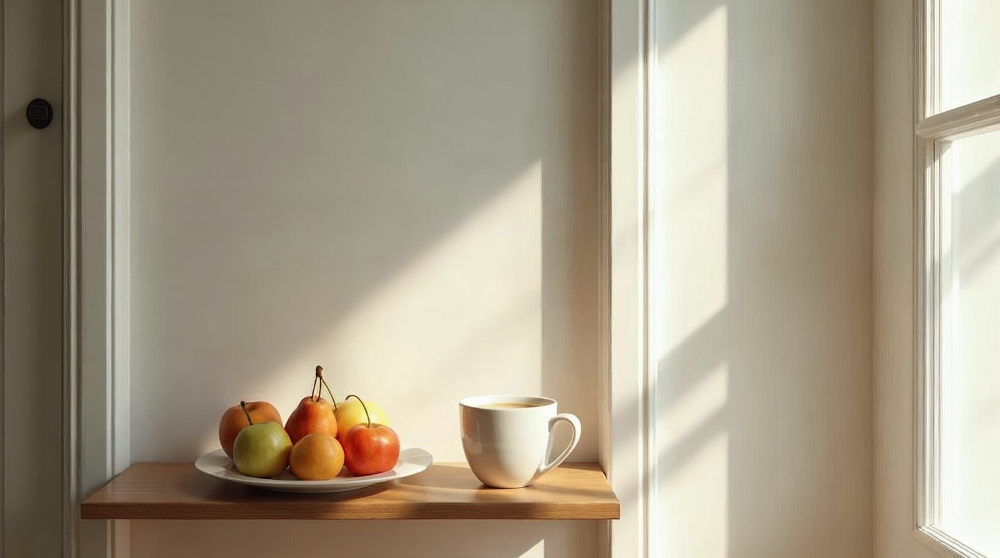
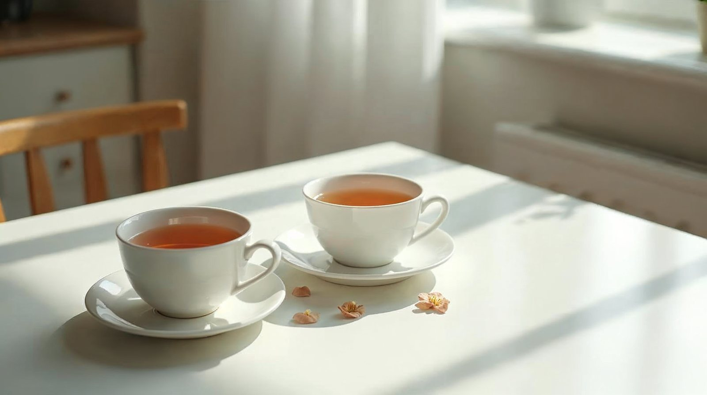
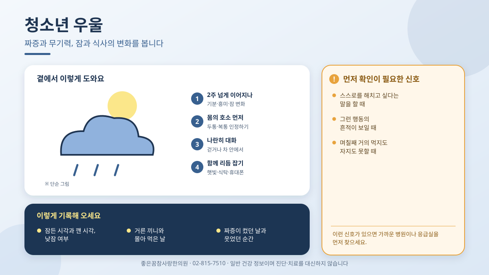

이종호 한의사 감수좋은꿈참사랑한의원 대표원장 (한의사 면허번호 19769)발행 2026-11-26 · 수정 2026-11-26
이 글의 차례
저녁 식탁에 아이 자리가 비어 있습니다. 불러도 "나중에"라는 대답뿐이고, 방문은 하루 종일 닫혀 있습니다. 좋아하던 운동도 그만두겠다고 하고, 무슨 일이 있느냐고 물으면 "아무 일도 없어"라며 고개를 돌립니다. 사춘기라 그러려니 하면서도, 마음 한쪽이 자꾸 무거워집니다.
진료실에서 보호자들께 이런 이야기를 자주 듣습니다. 그리고 대부분 같은 질문으로 끝납니다. "원래 이 나이 때는 다 이런 건가요, 아니면 뭔가 다른 게 있는 건가요?" 이 질문에는 한 번에 답하기 어렵지만, 함께 살펴볼 수 있는 기준은 있습니다.
청소년의 우울은 어른과 조금 다른 얼굴로 나타나는 경우가 많습니다. 눈물보다 짜증이 먼저 보이고, 슬프다는 말보다 "귀찮아", "몰라"라는 말이 늘어납니다. 그래서 보호자도, 아이 자신도 그것이 마음의 문제라는 것을 알아차리기 어렵습니다.
이 글에서는 사춘기의 자연스러운 흔들림과 도움이 필요한 우울을 어떻게 나눠 보는지, 보호자가 집에서 무엇을 지켜보고 어떻게 말을 건네면 좋은지, 한의원에서는 어떤 부분을 함께 살피는지 정리해 보겠습니다.

청소년 우울은 어떤 모습으로 나타나나요
어른의 우울이 "기분이 가라앉는다"로 시작한다면, 청소년의 우울은 행동의 변화로 먼저 보이는 경우가 많습니다. 보호자가 눈여겨볼 만한 모습은 이렇습니다.
- 사소한 일에도 짜증과 화를 내는 일이 부쩍 늘었다
- 좋아하던 취미나 친구 만나기에 흥미를 잃었다
- 잠이 크게 늘었거나, 반대로 밤새 잠들지 못한다
- 입맛이 없어 끼니를 거르거나, 단것과 야식을 몰아 먹는다
- 늘 피곤하다고 하고 몸이 무겁다고 한다
- 성적이 떨어지고 숙제나 준비물을 자주 놓친다
- "나는 뭘 해도 안 돼" 같은 말을 자주 한다
이 가운데 몇 가지가 2주 넘게 거의 매일 이어지고, 학교생활이나 가족과의 일상에 영향을 줄 정도라면 단순한 기분 변화 이상으로 보고 살펴보시는 것이 좋습니다.
왜 청소년 시기에 마음이 쉽게 흔들릴까요
사춘기에는 몸과 뇌가 함께 크게 바뀝니다. 감정을 느끼는 부분은 빠르게 예민해지는데, 그 감정을 조절하고 정리하는 부분은 더 늦게까지 자랍니다. 그래서 같은 일에도 감정의 파도가 어른보다 크고 오래갈 수 있습니다.
생활의 무게도 겹칩니다. 성적과 진로에 대한 부담, 친구 관계의 변화, 휴대폰 속 비교, 가족 안의 갈등 같은 일들이 한꺼번에 몰려오는 시기입니다. 여기에 잠까지 부족해지면 마음을 버티는 힘이 쉽게 바닥납니다. 청소년은 생체 시계가 원래 늦게 자고 늦게 일어나는 쪽으로 밀리는데, 등교 시간은 이른 탓에 만성적인 수면 부족에 놓이기 쉽습니다.
가족 가운데 우울을 겪은 분이 있거나, 최근 이사·전학·이별처럼 큰 변화를 겪었거나, 괴롭힘을 당하고 있다면 마음이 더 쉽게 흔들릴 수 있습니다. 다만 뚜렷한 이유 없이도 우울은 찾아옵니다. 이유를 찾지 못했다고 해서 아이의 힘듦이 덜한 것은 아닙니다.
한의학에서는 마음이 오래 눌리면 기운이 뭉치고 막혀 가슴이 답답하고 한숨이 늘며, 이것이 길어지면 몸의 기운까지 소모되어 쉽게 지친다고 설명합니다. 잠이 얕고 소화가 잘 되지 않는 모습이 함께 나타나는 경우가 많습니다.
사춘기의 흔들림과는 어떻게 다를까요
사춘기의 아이는 원래 혼자 있는 시간을 원하고, 부모보다 친구를 더 찾고, 기분이 하루에도 여러 번 바뀝니다. 이것은 자라는 과정의 자연스러운 모습입니다. 차이는 지속 기간과 넓이에 있습니다.
사춘기의 흔들림은 기분이 나빴다가도 친구를 만나거나 좋아하는 일을 하면 다시 살아납니다. 우울에서는 즐거워야 할 일 앞에서도 기분이 좀처럼 올라오지 않고, 그 상태가 몇 주씩 이어집니다. 가족에게만 문을 닫는 것이 아니라 친구와 좋아하던 활동에서도 멀어진다면 더 주의 깊게 보셔야 합니다.
잠과 식사, 기운의 변화가 함께 있는지도 중요한 단서입니다. 마음의 변화가 몸의 리듬까지 흔들고 있다면, 그때는 지켜보기만 하기보다 도움을 함께 찾아보시길 권합니다.
몸의 불편으로 먼저 말하기도 합니다
청소년은 마음이 힘들다는 말 대신 몸이 아프다고 말하는 경우가 많습니다. 아침마다 배가 아프다, 머리가 무겁다, 속이 답답하다, 늘 피곤하다는 호소가 반복되는데 병원 검사에서는 큰 이상이 없다면 마음의 무게도 함께 살펴볼 때입니다.
이런 몸의 불편을 꾀병으로 여기지 않는 것이 중요합니다. 아이는 실제로 아프고, 그 아픔이 마음과 연결되어 있을 뿐입니다. 몸의 불편을 먼저 인정해 주면, 아이가 그 뒤에 있는 마음의 이야기를 꺼낼 문이 조금 열리기도 합니다.
진료실에서도 저는 아이에게 마음보다 몸부터 묻습니다. 어디가 불편한지, 언제 심해지는지를 차근차근 듣다 보면, 아이가 먼저 "사실 요즘 학교 가기가 싫어요" 하고 말을 꺼내는 순간이 옵니다. 그 순간을 서두르지 않고 기다리는 것이 진료의 중요한 부분입니다.
보호자는 어떻게 말을 건네면 좋을까요
"왜 그러는데?", "너만 힘든 거 아니야" 같은 말은 아이를 더 깊이 닫히게 만들 수 있습니다. 해결책을 먼저 내놓기보다, 지금 아이가 어떤 상태인지 있는 그대로 알아봐 주는 말이 먼저입니다.
- "요즘 많이 지쳐 보여서 걱정돼. 말하고 싶을 때 언제든 들을게."
- "무슨 일인지 다 말 안 해도 괜찮아. 힘들면 힘들다고만 해 줘."
- "같이 잠깐 걸을까?"
마주 앉아 눈을 보며 하는 대화보다, 차를 타고 가거나 함께 걸으며 나란히 있을 때 아이가 더 편하게 입을 여는 경우가 많습니다. 대답이 없어도 괜찮습니다. 언제든 들을 준비가 되어 있다는 신호를 꾸준히 보내 주는 것이 중요합니다.
잠과 휴대폰은 마음과 어떻게 이어질까요
우울한 청소년 가운데 많은 수가 잠의 문제를 함께 겪습니다. 잠이 부족하면 감정을 다스리는 힘이 약해지고, 기분이 가라앉으면 다시 잠들기 어려워지는 고리가 생깁니다. 어느 쪽이 먼저인지 가리기보다, 잠을 붙잡아 주는 것이 마음을 받쳐 주는 출발점이 되는 경우가 많습니다.
밤늦게 누워 휴대폰을 보는 시간은 이 고리를 더 단단하게 만듭니다. 화면의 빛은 잠드는 시각을 뒤로 밀고, 다른 사람의 반짝이는 일상은 나만 뒤처졌다는 느낌을 키웁니다. 끝없이 내려가는 화면을 보다 보면 피곤한데도 손을 놓지 못하는 상태가 이어집니다.
아이를 탓하기 전에, 아이가 밤에 휴대폰을 붙잡는 이유를 먼저 들어 보세요. 낮에 마음 둘 곳이 없어서, 잠들기 전 생각이 많아지는 것이 무서워서 화면으로 도망치는 경우도 있습니다. 그 이유를 알면 다른 방법을 함께 찾을 수 있습니다.
먼저 이렇게 여쭙니다
처음 오시면 대략 이런 순서로 이야기를 나눕니다. 아이에게는 보호자 없이 따로 이야기할 시간을 드리기도 합니다.
- 이런 변화가 언제부터, 얼마나 자주 보였나요?
- 잠드는 시각과 일어나는 시각, 낮잠은 어떤가요?
- 끼니를 거르거나 몰아 먹는 일이 있나요? 최근 체중 변화는요?
- 학교와 학원, 친구 관계에서 달라진 것이 있나요?
- 머리, 배, 가슴의 답답함처럼 몸이 불편한 곳이 있나요?
- 이미 상담을 받았거나 먹고 있는 약이 있나요?
아이가 모든 질문에 대답하지 않아도 괜찮습니다. 오늘은 잠 이야기만 나누고, 다음에는 다른 이야기를 이어 가는 식으로 천천히 갑니다. 진료실이 아이에게 편한 곳이 되는 것이 먼저라고 생각합니다. 그래서 첫날에는 결론을 내리기보다 아이가 다시 오고 싶은 마음이 들도록 이야기를 마무리합니다.
일상에서 먼저 해 볼 수 있는 것
우울을 생활 습관만으로 풀 수는 없지만, 몸의 리듬을 받쳐 주면 마음이 버티는 힘을 조금 보탤 수 있습니다. 아이에게 강요하기보다 가족이 함께하는 방식으로 시작해 보세요.
- 아침에 일어나면 커튼을 열고 햇빛을 먼저 받기
- 잠들기 한 시간 전에는 휴대폰을 거실에 두기, 가족 모두 함께
- 하루 한 끼는 가족이 함께 식탁에 앉기, 대화는 가볍게
- 주말에 짧게라도 함께 걷거나 바깥에 나가기
- 해야 할 일을 아주 작게 쪼개서 하나씩 해내기
휴대폰을 갑자기 빼앗기보다, 사용 시간과 장소를 아이와 함께 정하는 편이 오래갑니다. 휴대폰은 아이에게 친구와 이어진 가장 중요한 통로처럼 느껴질 수 있어서, 한꺼번에 끊으면 고립감이 더 커질 수 있습니다.
몸을 움직이는 시간도 마음을 받쳐 줍니다. 거창한 운동이 아니어도 괜찮습니다. 저녁 먹고 동네를 한 바퀴 걷기, 강아지 산책 맡기기, 좋아하는 음악에 맞춰 몸 풀기처럼 아이가 부담 없이 할 수 있는 것부터 고르게 해 주세요. 땀이 살짝 날 만큼 움직인 날은 잠도 조금 깊어지는 경우가 많습니다.
한의원에서 함께 살필 수 있는 경우
- 마음의 무게와 함께 잠이 얕거나 잠드는 데 오래 걸리는 경우
- 가슴이 답답하고 한숨이 잦으며 소화가 잘 되지 않는 경우
- 늘 피곤하고 몸이 무겁다는 호소가 길게 이어지는 경우
- 아침마다 두통이나 복통이 반복되는데 검사에서 큰 이상이 없는 경우
- 정신건강의학과 진료나 상담을 받으면서 몸의 불편을 함께 살피고 싶은 경우
좋은꿈참사랑한의원에서는 진찰을 먼저 하고, 그 결과에 따라 생활 리듬 조정과 함께 침, 한약 상담 가운데 지금 아이에게 맞는 것을 고릅니다. 한약을 상의할 때는 아이가 먹고 있는 약을 모두 확인하고 보호자와 함께 신중하게 정합니다.
정신건강의학과에서 처방받은 약이 있다면 그대로 이어 가셔야 합니다. 한의원 진료 때문에 약을 멈추지 않으며, 약에 관한 결정은 처방한 선생님과 상의하시도록 안내해 드립니다. 마음의 치료와 몸의 돌봄이 나란히 갈 때 아이가 더 단단히 설 수 있다고 생각합니다.
학교와 함께 나눌 수 있는 것
아이가 학교에서 보내는 시간은 하루의 절반이 넘습니다. 담임 선생님이나 학교 상담 선생님께 아이의 상태를 알려 두면, 학교에서 보이는 모습을 함께 나눠 들을 수 있습니다. 집에서는 보이지 않던 친구 관계의 변화나 수업 중 모습이 실마리가 되기도 합니다.
등교가 힘든 시기라면 수행평가나 과제의 부담을 잠시 조정할 수 있는지 학교와 상의해 보세요. 모든 것을 내려놓기보다, 아이가 감당할 수 있는 만큼으로 줄여 일상의 끈을 놓지 않게 하는 것이 중요합니다.

이렇게 기록해 오시면 상담이 쉬워집니다
2주 정도 보호자가 지켜본 것을 간단히 적어 주세요. 아이에게 기록을 강요하기보다는, 아이가 원하면 스스로 기분 점수를 적어 보게 하는 정도가 좋습니다.
- 잠든 시각과 깬 시각, 낮잠 여부
- 끼니를 거른 날과 몰아 먹은 날
- 짜증이나 울음이 유난히 컸던 날과 그날 있었던 일
- 두통, 복통, 피로 같은 몸의 호소
- 아이가 그래도 웃었던 순간이나 즐거워한 일
마지막 항목을 꼭 적어 보시길 권합니다. 힘든 날만 기록하다 보면 보호자도 지치기 쉽습니다. 작은 웃음을 찾아 적는 일은 아이에게 남아 있는 힘을 확인하는 일이기도 합니다.

보호자의 마음도 함께 돌보세요
아이의 우울을 지켜보는 보호자도 많이 지칩니다. 내가 뭘 잘못했나 하는 죄책감, 어떻게 해야 할지 모르는 막막함이 함께 밀려옵니다. 보호자가 무너지지 않아야 아이 곁에 오래 머물 수 있습니다.
혼자 짊어지지 마시고, 배우자나 가족, 학교 상담 선생님과 무게를 나눠 주세요. 보호자 자신의 잠과 식사도 챙기셔야 합니다. 아이는 말보다 보호자가 하루를 버텨 내는 모습에서 더 많은 것을 배웁니다.
그리고 아이가 좋아지는 길은 곧게 뻗어 있지 않다는 것을 기억해 주세요. 나아지는 듯하다가 다시 가라앉는 날도 옵니다. 그런 날에 실망한 표정을 보이기보다, 어제보다 조금 힘든 날이구나 하고 담담하게 곁에 있어 주는 것이 아이에게 가장 큰 안심이 됩니다.
이런 증상은 먼저 확인이 필요합니다
- 스스로를 해치고 싶다는 말을 하거나, 그런 행동의 흔적이 보이는 경우
- 며칠째 거의 먹지도 자지도 못하거나, 현실과 동떨어진 말을 하는 경우
이런 신호가 있으면 한의원보다 가까운 병원이나 응급실을 먼저 찾으세요.
스스로를 해치고 싶은 생각이 든다면 ☎ 109에 연락해 주세요.
함께 읽으면 좋은 글
- 기분이 2주 넘게 가라앉고 잠·입맛·흥미가 떨어질 때는 어떻게 살피나요?
- 아이가 아침마다 배나 머리가 아프다며 학교 가기를 힘들어할 때(등교 거부·불안)는 어떻게 살피나요?
- 청소년이 새벽에 자고 아침에 못 일어나는 것은 어떻게 살피나요?
- 아이가 휴대폰을 보다가 밤늦게 잠들 때는 어떻게 바꿔 갈 수 있을까요?
- 시험을 앞둔 수험생이 불안으로 가슴이 답답하고 잠을 설칠 때는 어떻게 하나요?

여쭙는 것
- 이런 변화가 언제부터, 얼마나 자주 보였나요?
- 잠드는 시각과 일어나는 시각, 낮잠은 어떤가요?
- 끼니를 거르거나 몰아 먹는 일이 있나요? 최근 체중 변화는요?
생활에서 해 볼 것
- 아침에 일어나면 커튼을 열고 햇빛을 먼저 받기
- 잠들기 한 시간 전에는 휴대폰을 거실에 두기, 가족 모두 함께
- 하루 한 끼는 가족이 함께 식탁에 앉기, 대화는 가볍게
한의원에서 함께 살필 것
- 마음의 무게와 함께 잠이 얕거나 잠드는 데 오래 걸리는 경우
- 가슴이 답답하고 한숨이 잦으며 소화가 잘 되지 않는 경우
- 늘 피곤하고 몸이 무겁다는 호소가 길게 이어지는 경우
먼저 확인이 필요한 신호
- 스스로를 해치고 싶다는 말을 하거나, 그런 행동의 흔적이 보이는 경우
- 며칠째 거의 먹지도 자지도 못하거나, 현실과 동떨어진 말을 하는 경우
한눈에 보는 표
| 구분 | 핵심 |
|---|---|
| 여쭙는 것 | 이런 변화가 언제부터, 얼마나 자주 보였나요? 잠드는 시각과 일어나는 시각, 낮잠은 어떤가요? |
| 생활에서 해 볼 것 | 아침에 일어나면 커튼을 열고 햇빛을 먼저 받기 잠들기 한 시간 전에는 휴대폰을 거실에 두기, 가족 모두 함께 |
| 한의원에서 함께 살필 것 | 마음의 무게와 함께 잠이 얕거나 잠드는 데 오래 걸리는 경우 가슴이 답답하고 한숨이 잦으며 소화가 잘 되지 않는 경우 |
| 먼저 확인이 필요한 신호 | 스스로를 해치고 싶다는 말을 하거나, 그런 행동의 흔적이 보이는 경우 며칠째 거의 먹지도 자지도 못하거나, 현실과 동떨어진 말을 하는 경우 |
자주 묻는 질문
사춘기라서 그런 건지 우울인지 어떻게 알 수 있나요?
기분의 변화가 2주 넘게 거의 매일 이어지는지, 친구와 좋아하던 활동에서도 멀어졌는지, 잠과 식사까지 흔들리는지를 함께 봅니다. 한두 가지가 아니라 여러 변화가 겹쳐 있다면 도움을 함께 찾아보시길 권합니다.
아이가 상담을 거부하면 어떻게 하나요?
처음부터 마음 이야기를 하자고 하기보다, 잠이나 두통처럼 아이가 불편해하는 몸의 문제로 시작하는 것도 방법입니다. 보호자가 먼저 상담을 받으며 아이에게 다가가는 방법을 함께 찾는 경우도 있습니다.
한의원 진료만으로 충분한가요?
우울이 깊거나 오래되었다면 정신건강의학과나 상담 기관과 함께 가시길 권합니다. 한의원에서는 그 과정에서 잠, 소화, 피로처럼 몸에서 나타나는 불편을 나란히 살핍니다.
우울증 약과 한약을 함께 먹어도 되나요?
먹고 있는 약을 모두 확인한 뒤 신중하게 정합니다. 처방받은 약은 그대로 이어 가시고, 필요하면 처방한 선생님과 상의하시도록 안내해 드립니다.
좋은꿈참사랑한의원은 재진 때 지난번 이야기부터 이어서 여쭙니다. 진료시간과 예약은 오시는 길에서 확인하세요.
어디서 상담받을 수 있나요?
좋은꿈참사랑한의원은 서울 동작구 만양로2길 2 신성빌딩 3층·5층(서울 동작구 상도동, 7호선 상도역 3번 출구 근처)에 있습니다. 한의사 3명(이종호 대표원장, 조영기 수석진료원장, 정원영 진료원장)이 진료합니다. 진료시간은 평일 09:30~20:00(점심 13:00~14:00), 토·일·공휴일 09:30~15:00이며, 방문 전 전화로 확인을 권합니다. 예약은 네이버 예약, 카카오톡 상담, 전화 02-815-7510로 받습니다.
이 글은 일반적인 건강 정보이며 개인의 진단이나 치료를 대신하지 않습니다. 증상이 있거나 복용 중인 약이 있다면 진료를 통해 확인하세요. 치료 효과는 개인마다 다를 수 있습니다.
작성 기준: 일반적으로 알려져 있는 건강 정보를 참고해 정리했습니다(대표원장 감수). 증상 기록은 1~2주 동안 하루 1회, 비슷한 시간에 적어 오시면 지난 상태와 비교하기 쉽습니다.